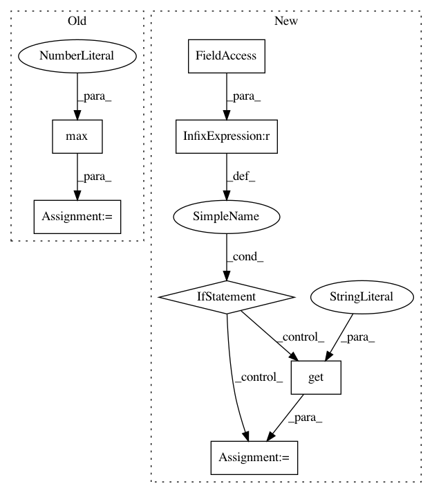

098f69b7c2282a556fc0b57d37b70328457de834,tmtoolkit/lda_utils/evaluation_lda.py,MultiprocEvaluationWorkerLDA,fit_model_using_params,#MultiprocEvaluationWorkerLDA#Any#,21
Before Change
if self.eval_metric == "cao_juan_2009":
results = metric_cao_juan_2009(lda_instance.topic_word_)
else: // default: loglikelihood
n_last_lls = max(int(round(EVALUATE_LAST_LOGLIK * len(lda_instance.loglikelihoods_))), 1)
if n_last_lls > 1:
results = np.mean(lda_instance.loglikelihoods_[-n_last_lls:])
else:
results = lda_instance.loglikelihoods_[-1]
After Change
lda_instance = LDA(**params)
lda_instance.fit(self.data)
if self.eval_metric == "griffiths_2004":
burnin = self.eval_metric_options.get("burnin", 50) // lda_instance.refresh
if burnin >= len(lda_instance.loglikelihoods_):
raise ValueError("`griffiths_2004_burnin` set too high. should be less than %d"
% (lda_instance.loglikelihoods_ * lda_instance.refresh))
logliks = lda_instance.loglikelihoods_[burnin:]
results = metric_griffiths_2004(logliks)
elif self.eval_metric == "cao_juan_2009":
results = metric_cao_juan_2009(lda_instance.topic_word_)
elif self.eval_metric == "arun_2010":
results = metric_arun_2010(lda_instance.topic_word_, lda_instance.doc_topic_, self.data.sum(axis=1))
else: // default: loglikelihood
results = lda_instance.loglikelihoods_[-1]
logger.info("> evaluation result with metric "%s": %f" % (self.eval_metric, results))
self.send_results(params, results)
In pattern: SUPERPATTERN
Frequency: 3
Non-data size: 7
Instances
Project Name: WZBSocialScienceCenter/tmtoolkit
Commit Name: 098f69b7c2282a556fc0b57d37b70328457de834
Time: 2017-10-11
Author: markus.konrad@wzb.eu
File Name: tmtoolkit/lda_utils/evaluation_lda.py
Class Name: MultiprocEvaluationWorkerLDA
Method Name: fit_model_using_params
Project Name: elbayadm/attn2d
Commit Name: 1c6679294848f303a361cba7b306b760e299bd9c
Time: 2019-09-30
Author: sarthak_garg@apple.com
File Name: fairseq/sequence_scorer.py
Class Name: SequenceScorer
Method Name: generate